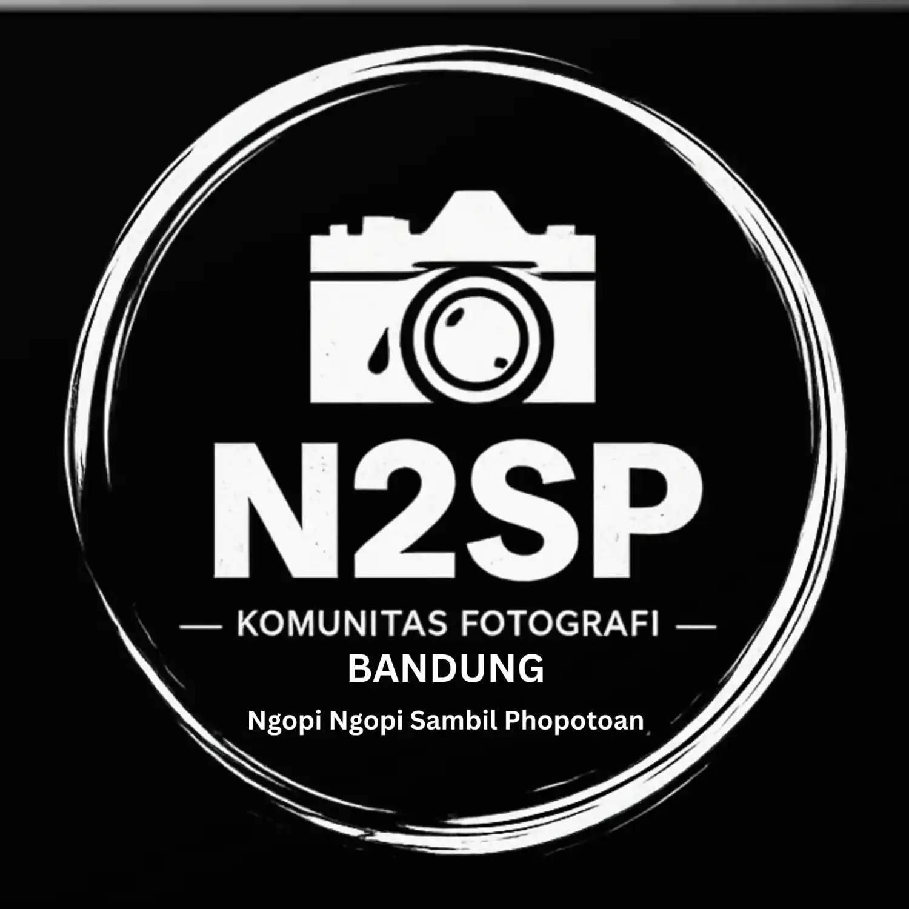
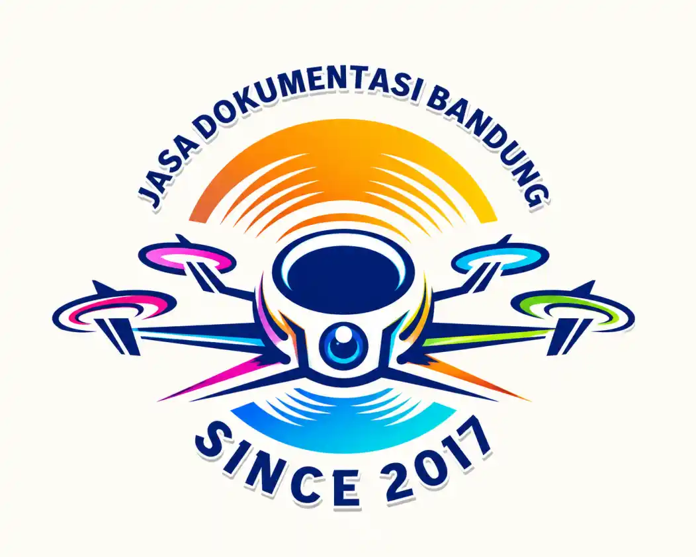

Community
24 September 2026
Photography
24 September 2026
Braga Photo Festival V Hadir di Bandung, Dorong Kolaborasi dan Kreativitas Fotografi
Braga Photo Festival V akan hadir di kawasan Braga, Bandung, dengan menghadirkan hunting photo, photo contest, serta pertunjukan kesenian Galur Braga.
Read More →
Community
25 September 2026
N2SP Komunitas Fotografi Bandung: Dari Ngopi, Memotret hingga Kolaborasi Kreatif
Mengenal N2SP atau Ngopi Ngopi Sambil Phopotoan, komunitas fotografi Bandung yang berkembang melalui aktivitas visual, dokumentasi, event, dan kolaborasi bersama berbagai pihak, termasuk Bagi Kopi dan Jivana Coffee & Eatery.
Read More →
```
Documentation
26 September 2026
Jasa Dokumentasi Foto dan Video Bandung | Gunawan Satyakusuma
Jasa dokumentasi foto dan video Bandung untuk event, corporate event, seminar, workshop, komunitas, UMKM, perjalanan, dan kegiatan profesional bersama Gunawan Satyakusuma.
Read More → ```